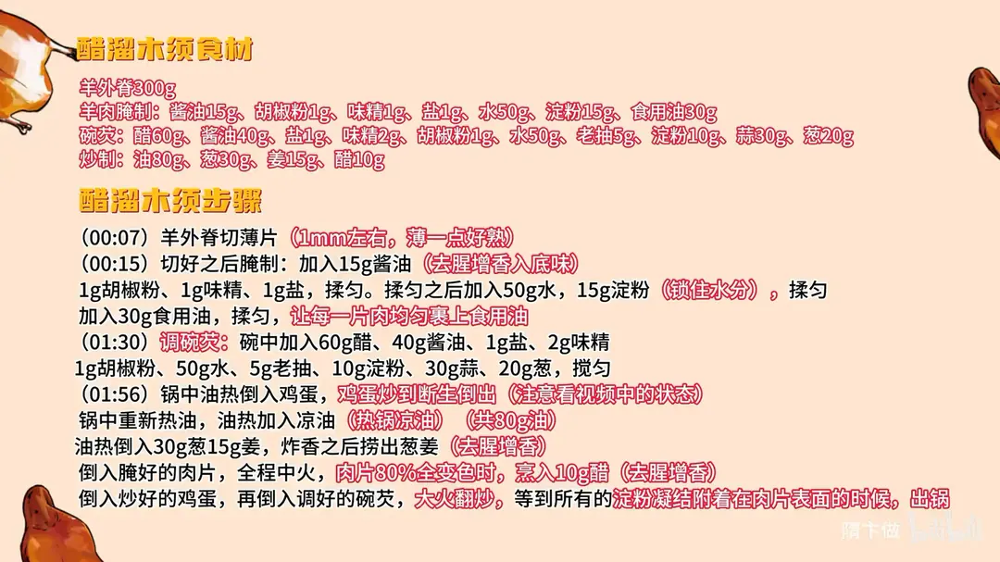
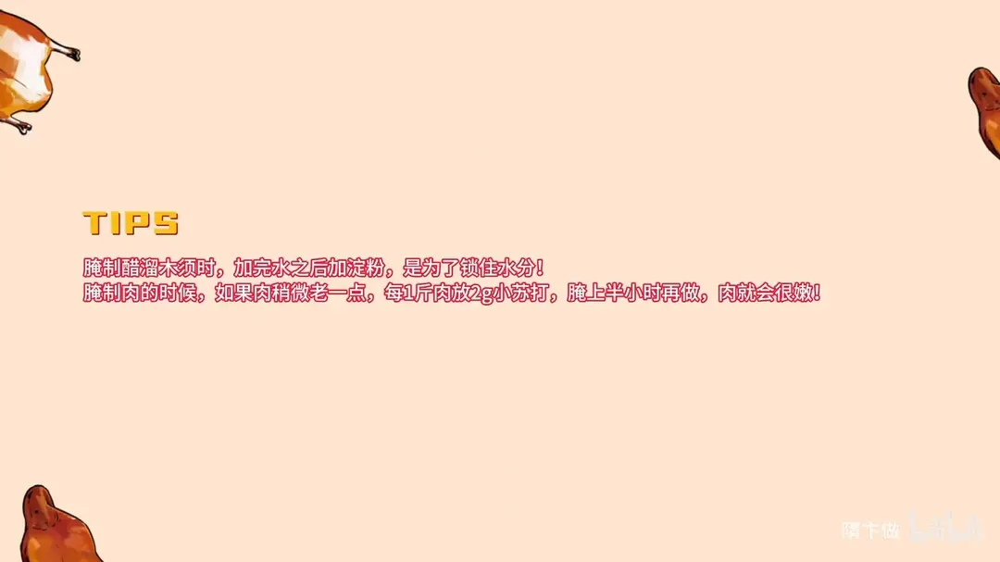

醋溜木须
隋卞一做。羊外脊切 1mm 薄片，加酱油、水、淀粉上劲后封油；热锅凉油大火快炒，肉片八成变色时烹醋 10g，倒入炒蛋和碗芡（醋 60g、酱油 40g），芡汁裹满肉片即出锅。
原视频：https://www.bilibili.com/video/BV1seUSYCE4J
食材
羊外脊、鸡蛋 等 23 样
| 类别 | 用料 | 用量 |
|---|---|---|
| 主料 | 羊外脊 | 300g |
| 主料 | 鸡蛋 | 适量 |
| 羊肉腌制 | 酱油 | 15g |
| 羊肉腌制 | 胡椒粉 | 1g |
| 羊肉腌制 | 味精 | 1g |
| 羊肉腌制 | 盐 | 1g |
| 羊肉腌制 | 水 | 50g |
| 羊肉腌制 | 淀粉 | 15g |
| 羊肉腌制 | 食用油 | 30g |
| 碗芡 | 醋 | 60g |
| 碗芡 | 酱油 | 40g |
| 碗芡 | 盐 | 1g |
| 碗芡 | 味精 | 2g |
| 碗芡 | 胡椒粉 | 1g |
| 碗芡 | 水 | 50g |
| 碗芡 | 老抽 | 5g |
| 碗芡 | 淀粉 | 10g |
| 碗芡 | 蒜 | 30g |
| 碗芡 | 葱 | 20g |
| 炒制 | 油 | 80g |
| 炒制 | 葱 | 30g |
| 炒制 | 姜 | 15g |
| 炒制 | 醋 | 10g |
步骤
- 切肉：羊外脊切薄片，1mm 左右，薄一点好熟。
- 腌制：加入 15g 酱油（去腥增香入底味）、1g 胡椒粉、1g 味精、1g 盐，揉匀；揉匀之后加入 50g 水、15g 淀粉（锁住水分），揉匀；最后加入 30g 食用油，揉匀，让每一片肉均匀裹上食用油。
- 调碗芡：碗中加入 60g 醋、40g 酱油、1g 盐、2g 味精、1g 胡椒粉、50g 水、5g 老抽、10g 淀粉、30g 蒜、20g 葱，搅匀备用。
- 炒鸡蛋：锅中油热倒入鸡蛋，鸡蛋炒到断生就出锅，注意看视频中的状态。
- 炒肉冲芡：锅中重新热油，油热后加入凉油（热锅凉油，共 80g 油）；油热倒入 30g 葱、15g 姜，炸香之后捞出葱姜（去腥增香）；倒入腌好的肉片，全程中火，肉片八成变色时烹入 10g 醋（去腥增香），再倒入炒好的鸡蛋和调好的碗芡，大火翻炒，等所有淀粉凝结附着在肉片表面的时候，出锅。
小贴士
- 腌制醋溜木须时，加完水之后再加淀粉，是为了锁住水分。
- 肉如果稍微老一点，每 1 斤肉放 2g 小苏打，腌上半小时再做，肉就会很嫩。
讲解要点
难度：★★★☆☆（切薄片、上浆、碗芡收汁三步都要求手上有点准头）
为什么这么做
- 选羊外脊、前腿、后腿这类筋少的部位，切 1mm 薄片：薄片快熟、能吸汁，厚了容易老。
- 先用酱油、胡椒粉、味精、盐腌：酱油既去腥增香又入底味，不用另加去腥料。
- 先加水再加淀粉：水让口感嫩，淀粉把水锁住；家里火小，水别打多、粉也别多，否则下锅出水脱浆。
- 最后封一层油：肉片下锅容易散开，油还防风干。
- 肉偏老就每斤加 2g 小苏打腌半小时：破坏纤维，炒出来更嫩。
- 热锅凉油、葱姜炸香后捞出，用这锅料油炒肉：去腥增香，肉片还不粘锅。
- 肉片八成变色时烹醋：醋在锅里挥发把腥味带走，留在肉上的是酸香，作用相当于料酒。
- 碗芡里放葱蒜香油，最后大火收：淀粉全部凝结、裹住原料才出锅，芡亮、味才裹得住。
容易翻车
- 肉切得太厚，或腌时水打太多，下锅就出水、脱浆，芡挂不上。
- 鸡蛋炒过老，回锅再一炒就发硬。
- 芡下得太早、锅里汤水还多，收不住，成了汤菜。
- 火太小，芡发白不亮，酸香味也出不来。
热评补充
- 「木须」就是鸡蛋：蛋炒碎后形似桂花，桂花又名木樨，简化写成木须，不是木耳或黄花。
- 有人嫌这菜油大，其实油少一点就不香——油是酸香味挂在肉上的媒介。
原片尾卡


原片文案
AI 字幕校准稿
名菜醋溜木须。羊外脊，您选用羊前腿、羊后腿，筋少的地方都可以，直接切片就行，薄一点，它好熟。
羊肉切好之后咱们腌一下，搁点酱油、胡椒粉、味精、盐。搁酱油可以起到去腥增香的作用，还入了底味，不用再单独放其他东西去腥了。
少加一点水，口感会稍微更好一点；加完水之后加淀粉，是锁水分的。在餐厅、酒店做，打水会打得多一点；咱们在家做就不用那么麻烦，也不用打那么多水，因为我们火不太一样，淀粉也不用放那么多。
然后加点油没关系，油多放点没关系，炒的时候它很容易散开，放完油之后也防止风干。我们选的这块肉本身就挺嫩的；如果您选的肉稍微老一点，那就每一斤肉放上 2 克小苏打，腌上半小时以后再做，就会更嫩。
调一个碗芡：醋，我们用的是米醋，酱油、盐、味精、胡椒粉，再来点水、老抽、淀粉，香油、蒜和葱放在汁里边，齐了。
开锅，锅里倒入干净油，把油烧热，倒入鸡蛋。鸡蛋炒到断生，看这样就可以了——断生的鸡蛋不能太老，太老了是不好吃的。倒出来，加入底油，大火把锅烧热，加入凉油。
看这手法：把油烧热之后把葱姜倒进去，用炸过葱姜的这个油炒羊肉片，这样去腥增香；炒香了之后把葱姜捞出来，倒入腌好的肉片，全程中火。你看下边是没有粘锅的。快成熟了，八成全变色了，烹上点醋，去腥增香。
鸡蛋倒进去，这会儿倒入调好的碗芡，大火，所有淀粉都凝结之后，都包裹到原料上面了，咱们就可以出锅。
你看这软软嫩嫩的，鸡蛋好软好嫩。羊肉切得特别薄，吸味道也吸得很足、很透，整个酸咸香的味道完全把羊肉和鸡蛋裹住，一口下去超级下饭又开胃。
起初炸的那点料油炒，肉片没有腥味，又烹了一点醋，也去了腥味，所以现在肉片没有羊膻味，都是羊肉的香味。烹醋那步，要是不说很多人都想不到，当料酒用了吧。大冬天的在家做起来吧。